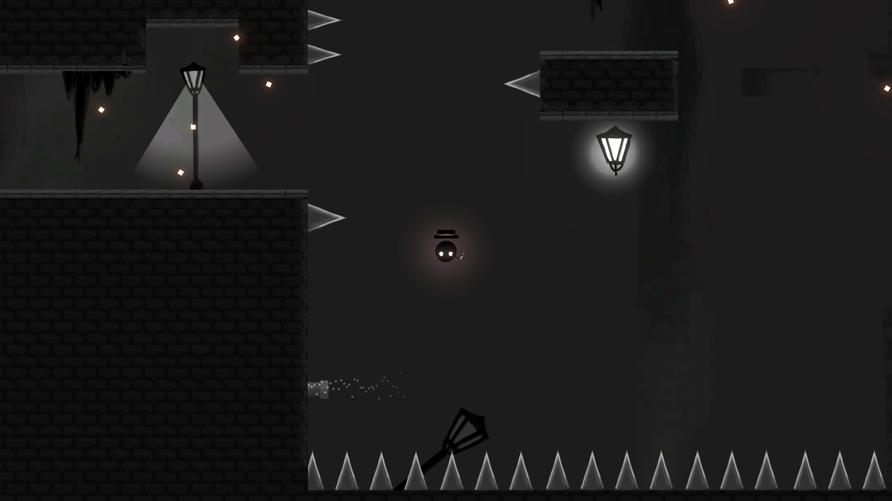
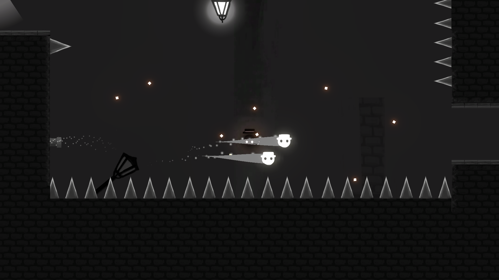
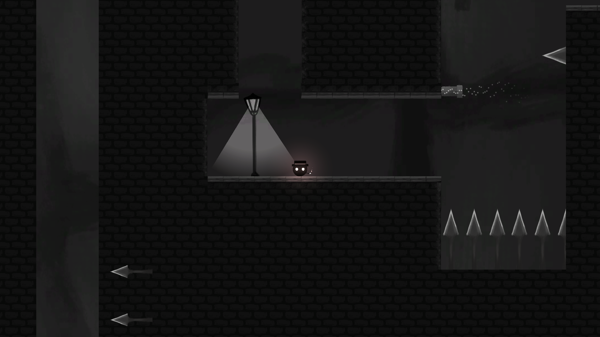

Project Description
This project was a group collaboration in a prototyping class that mandated feature-complete game prototypes within a 1-2 week span. This was our final submission, built in Unity and presented before a panel of industry guests.
Because the group was larger than usual, we split off into different roles. I took on level design, building the experience that the player would have by designing the possible paths, hidden traps, and potential solutions and hints that would contain the average engagement time to about 10-15 minutes.
A Closer Look
You can find the project solution and code here.
You can download the game here.
Log
Guiding Lights
Because of In Another Life's film noir-esque theme, the use of light versus the highly prevalent darkness of the visuals helped establish a sense of direction as well as danger. In order to guide players towards possible routes, lamps and streetlights were strategically along various paths to catch the eye and draw attention to these places.
Streetlights, along with their accompanying sound effect, signify checkpoints that the player has safely reached by turning on and illuminating the space once the player is in range. Lamps, however, respond to player proximity by turning off, warning of imminent death from nearby concealed traps.
 Leaping across a floor spikes right after reaching the third checkpoint of floor 3.Wind-Blower Mechanic
The wind-blowers have no effect on the player on their own, but will activate when the player is nearby. Ghosts that happen to be in range will be buffeted by the winds, which can have fatal consequences if the player is relying on them as a platform above danger.
On the other hand, they can also be exploited in other locations, where riding ghosts above a current rewards observant players with an extremely quick mode of transport over long distances.
 Wind-blower in action, blowing ghosts from underneath the player.Traps
Some of the traps built into the game include hidden arrows, shifting walls, and endless falls into a bed of spikes. The amount of traps as well as the difficulty of bypassing them increases as the floor level increases, demanding better maneuvering around obstacles and ghosts in order to cross over. If sheer memory is not enough to recall all of the hazardous locations, then the lingering ghost mechanic offers a visual reminder of the player's place of death and hopefully offers them a way to avoid it on the next round.
 Preview of the hazards starting from the second checkpoint of floor 3.